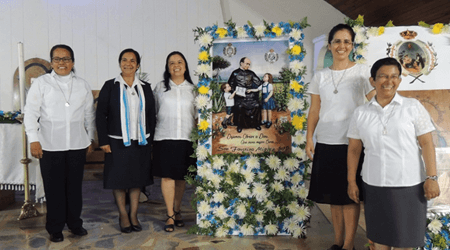

El milagro determinante para la canonización de Faustino Míguez tuvo lugar en Chile en el año 2003 y benefició a Verónica Storberg, catequista y madre vinculada al Colegio Divina Pastora del municipio de La Florida.
Durante su embarazo sufrió un cuadro extremadamente severo de preeclampsia y graves hemorragias. Tras practicársele una cesárea de emergencia para salvar a la criatura, entró en coma profundo y con pronóstico médico irreversible.
Sus familiares y la comunidad educativa iniciaron una intensa cadena de oración pidiendo la intercesión del P. Faustino Míguez y llevando una reliquia hasta la clínica. La detención inexplcable del sangrado y la posterior recuperación completa sin secuelas neurológicas fueron evaluadas rigurosamente por juntas médicas y teológicas.
El 21 de diciembre de 2016, el Papa Francisco promulgó oficialmente el decreto de la Santa Sede que reconocía formalmente el hecho como un milagro atribuido a la intercesión del beato.
